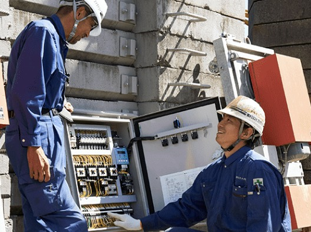
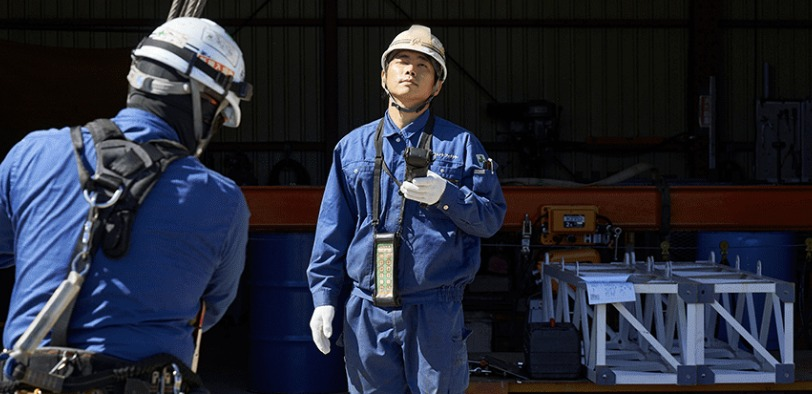
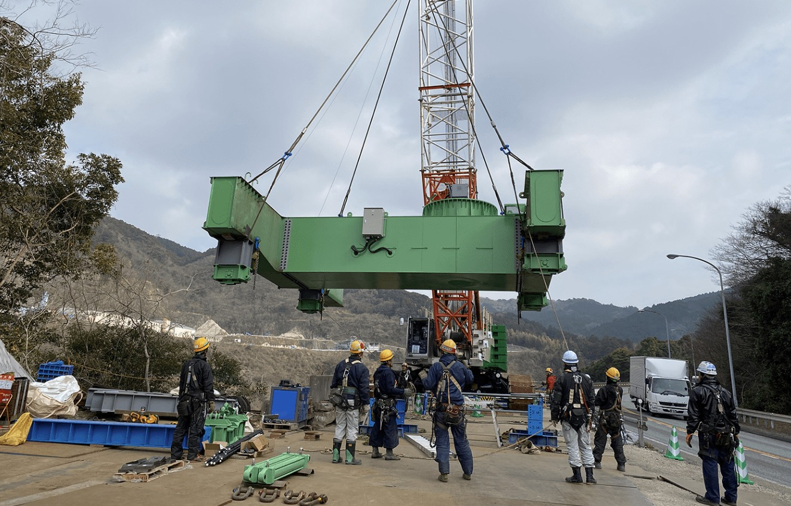

Our Work
私たちの仕事
現場で事故が起こらない。
それが、日々の成果。
建設工事に使う機械の整備・修理を、自社工場で行っています。扱うのは工事用エレベーターやタワークレーンなど、特殊なものばかり。専門性が高いからこそ、世の中から必要とされ続ける技術です。
真摯な対応を積み重ねてきた結果、当社に営業職はいません。実績と信頼が、次のご依頼を運んできてくれます。

建設工事に使う機械の整備・修理を、自社工場で行っています。扱うのは工事用エレベーターやタワークレーンなど、特殊なものばかり。専門性が高いからこそ、世の中から必要とされ続ける技術です。
真摯な対応を積み重ねてきた結果、当社に営業職はいません。実績と信頼が、次のご依頼を運んできてくれます。
 01
01入社後は先輩について基礎から。3か月の教育プログラムのあと、2〜3年かけて幅広い技術を磨きます。

02未経験から始めた30代、40〜50代のベテランが活躍中。仲間の成長に協力的なスタッフばかりです。

03賞与年2回（年間6.5か月分の実績）。住宅・家族・資格などの手当、借上寮・社宅も整えています。
※ここはサンプルです。実際には御社スタッフの1日の流れに差し替えます
作業内容と安全確認を共有。
工事用エレベーターの点検・整備。
小休憩と合わせ計1時間40分。
タワークレーン部品の整備・修理。
工具整理と翌日の段取り。
残業はほとんどありません。




※ここはサンプルです。実際に働く先輩からのメッセージ・写真に差し替えます
異業種からの転職でしたが、先輩が横について一から教えてくれました。できる作業が増えるのが楽しいです。
自分が整備した機械が、街の大きな現場で動いている。それを見るたびに誇らしい気持ちになります。
定時で帰れる日がほとんど。有給も気兼ねなく取れるので、長く続けられそうだと感じています。
技術は時間をかければ必ず身につきます。興味と前向きな気持ちがあれば、それで十分です。
※ここはサンプルです。実際には御社の「よくある質問」が入ります
※ここはサンプルです。実際の採用担当者の写真・お名前・メッセージに差し替えます
| 募集職種 | 建設機械を取り扱う工場作業スタッフ |
|---|---|
| 雇用形態 | 正社員（試用期間3か月・条件変動なし） |
| 仕事内容 | 工場内での、建設工事用機械（工事用エレベーター、タワークレーン、特殊機械など）の整備・修理 |
| 応募資格 | 普通自動車免許（AT限定可） 学歴不問・経験不問・ブランクOK・U/Iターン歓迎 【歓迎】溶接資格／玉掛け技能者資格／低圧電気取扱の特別教育修了／クレーン運転資格 |
| 給与 | 月給 220,000円〜550,000円（経験・能力により決定） ※みなし残業代（15,700〜39,300円／14時間分）を含む。超過分は別途支給 昇給 年1回／賞与 年2回（年間6.5か月分の支給実績あり） 【モデル給与例】入社2年目 年収480万円／入社10年目 年収600万円／入社15年目 年収750万円 |
| 勤務時間 | 8:30〜17:20（休憩1時間40分）／月単位の変形労働時間制 残業：月平均5〜10時間 |
| 休日・休暇 | 隔週休2日制（隔土曜・日曜）、祝日 GW・夏季・年末年始休暇、有給休暇（5日以上の連続休暇も取得可） |
| 勤務地 | 〒265-0076 千葉県千葉市若葉区下田町1376-4 千葉都市モノレール2号線「千城台駅」より車で約4分 |
| 待遇・福利厚生 | 社会保険完備／交通費全額支給／住宅手当／家族手当／資格手当／能力給手当／役職手当／外勤手当／出張手当／借上寮・社宅あり（社内規定あり）／退職金制度あり（社内規定あり）／車通勤OK／制服貸与 |
| 選考プロセス | エントリー → 書類選考・面接（1回）→ 内定 |